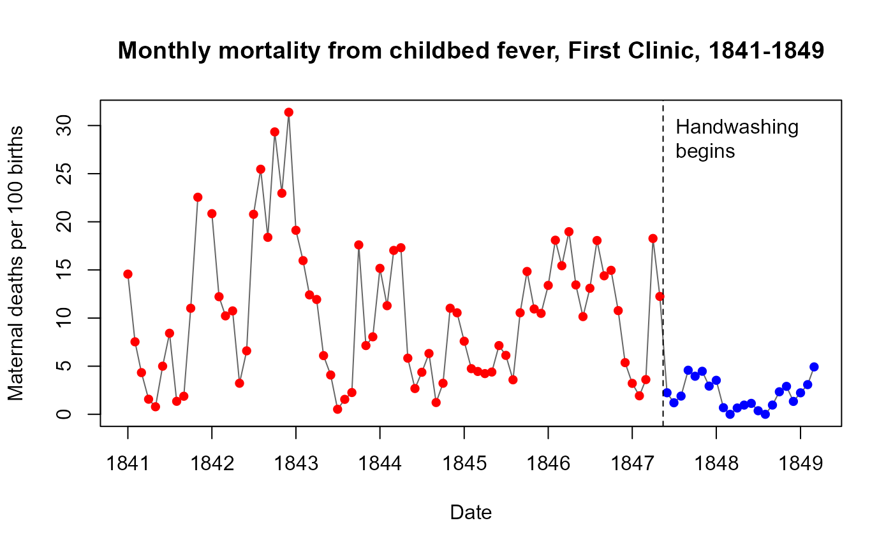
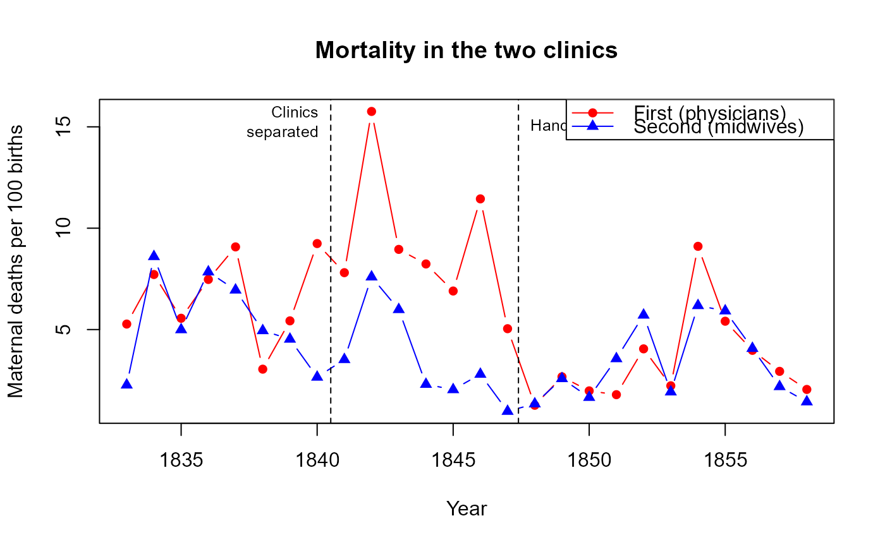
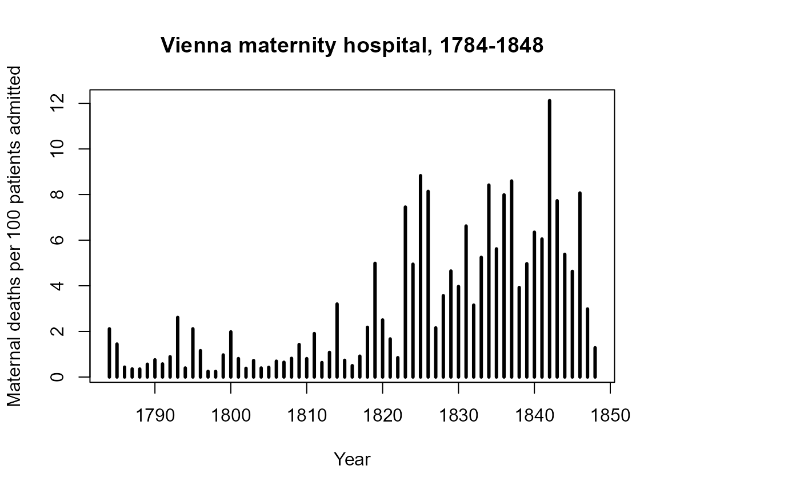

Semmelweis' Data on Handwashing and Deaths from Childbed Fever
Source:R/Handwashing.R
Handwashing.RdIgnaz Semmelweis (1861) used counts of births and maternal deaths at the Vienna General Hospital's maternity clinics to argue that childbed (puerperal) fever was carried to women in labor on the hands of physicians and medical students coming from the autopsy room. In the First Clinic, where physicians were trained, mortality had been about two and a half times that of the Second Clinic, where midwives were trained. After he required washing the hands in a chlorine solution, beginning in mid-May 1847, mortality in the First Clinic fell to the level of the Second.
These three datasets were transcribed from the tables in his 1861 book. They give the comparison of the two clinics by year, the month-by-month record of the First Clinic before and after handwashing, and the long-run record of the whole hospital.
Format
Handwashing.clinics: A data frame with 52 observations on the following 4 variables,
giving births and deaths in each clinic for each year, 1833-1858.
yearnumeric, year
clinicfactor, with levels
FirstSecondbirthsnumeric, number of births
deathsnumeric, number of maternal deaths
Handwashing.monthly: A data frame with 99 observations on the following 5 variables,
giving births and deaths in the First Clinic for each month, January 1841 - March 1849.
datea
Date, the first day of the monthyearnumeric, year
monthnumeric, month, 1-12
birthsnumeric, number of births;
NAfor December 1841deathsnumeric, number of maternal deaths;
NAfor December 1841
Handwashing.hospital: A data frame with 65 observations on the following 3 variables,
giving births and deaths in the whole maternity hospital for each year, 1784-1848.
yearnumeric, year
birthsnumeric, number of patients admitted
deathsnumeric, number of maternal deaths
Source
Semmelweis, I. P. (1861). Die Aetiologie, der Begriff und die Prophylaxis des Kindbettfiebers. Pest, Wien und Leipzig: C. A. Hartleben's Verlags-Expedition. Transcribed from the page images of the copy in the Wellcome Collection, https://wellcomecollection.org/works/n5yu49cf.
Details
Mortality rates are not included; calculate them as 100 * deaths / births. Semmelweis
printed a percent beside every count, but the decimals are too small to read reliably in
the scanned copy and a few of them disagree with the counts.
The two clinics. The maternity hospital was divided into two clinics, and both at first trained medical students and midwives alike. By a decree of October 1840 all male students were assigned to the First Clinic and all student midwives to the Second, so the contrast of physicians with midwives applies from 1841. The First Clinic admitted patients on four days of the week and the Second on three, which is why it has more births.
The start of handwashing. Semmelweis wrote that chlorine washing began "in the middle
of May 1847", and that he no longer remembered the day. In Handwashing.monthly, May 1847
is therefore a mixed month, and June 1847 is the first full month of handwashing. He was
assistant in the First Clinic from 20 March 1847 to 20 March 1849; the monthly series ends
with his last month there.
Sources of each dataset.
Handwashing.clinics combines Table XXII (1833-1840, p. 139), Table I (1841-1846, p. 3)
and Table XXIII (1847-1858, p. 140). Handwashing.monthly combines Table III (January
1841 - May 1847, p. 13), an unnumbered table (June - December 1847, p. 56), Table XVI
(1848, p. 57) and three months of 1849 given in the text on p. 57. Handwashing.hospital
is Table XVII (p. 62). In that table the counts are headed "Aufgenommen" (admitted),
and 1784 is a part year, the hospital having opened on 16 August.
The column sums of the transcribed counts reproduce all of the totals printed in
Tables I, XVI, XXII and XXIII.
Inconsistencies in the original. Semmelweis' tables do not always agree with each other.
The monthly births in the First Clinic add up to fewer than the yearly births in
Handwashing.clinicsfor every year from 1842 to 1847 (by 115 to 658), although the deaths agree exactly for 1843-1848. Monthly mortality rates are therefore somewhat higher than the yearly rates for the same year.The figures for the whole hospital in
Handwashing.hospitalare not the sum of the two clinics for 1833-1848.In Table I the percent printed for the Second Clinic over 1841-1846 is 3.38, but the printed totals give 691 / 17791 = 3.88. The First Clinic's 9.92 agrees with its counts, so the ratio of the two clinics is about 2.6, not 2.9.
Semmelweis noted that mortality in the First Clinic was understated, because in bad periods sick patients were transferred to the general hospital and their deaths were recorded there.
Other versions of these data. The data for the two clinics in 1841-1846 and the
monthly series are widely used in teaching, in versions that derive from the tables in
the Wikipedia article "Historical mortality rates of puerperal fever", taken in turn
from Carter's (1983) translation. Handwashing.monthly is identical to the Wikipedia
table. The other two differ from it in one value each, which were checked against both the
1861 original and Carter: births in the Second Clinic in 1848 are 3219 (not 3319), and
births in the hospital in 1792 are 1574 (not 1579). The Wikipedia yearly series for
1784-1849 can be compared with Handwashing.hospital only up to 1832: from 1833 it gives
the First Clinic alone, whereas Table XVII is the whole hospital throughout.
References
Semmelweis, I. (1983). The Etiology, Concept, and Prophylaxis of Childbed Fever. Translated by K. Codell Carter. Madison: University of Wisconsin Press.
La Rochelle, P., & Julien, A.-S. (2013). How dramatic were the effects of handwashing on maternal mortality observed by Ignaz Semmelweis? Journal of the Royal Society of Medicine, 106(11), 459-460.
Loudon, I. (2013). Ignaz Phillip Semmelweis' studies of death in childbirth. Journal of the Royal Society of Medicine, 106(11), 461-463. https://doi.org/10.1177/0141076813507844
Stang, A., Standl, F., & Poole, C. (2022). A twenty-first century perspective on concepts of modern epidemiology in Ignaz Philipp Semmelweis' work on puerperal sepsis. European Journal of Epidemiology, 37, 437-445. https://doi.org/10.1007/s10654-022-00871-8
Wikipedia, "Historical mortality rates of puerperal fever", https://en.wikipedia.org/wiki/Historical_mortality_rates_of_puerperal_fever
Examples
data(Handwashing.clinics)
data(Handwashing.monthly)
data(Handwashing.hospital)
# the start of handwashing, in mid-May 1847
start <- as.Date("1847-05-15")
# Monthly mortality in the First Clinic, before and after handwashing
monthly <- within(Handwashing.monthly, {
rate <- 100 * deaths / births
washing <- date > start
})
plot(rate ~ date, data = monthly, type = "l", col = "grey40", xaxt = "n",
xlab = "Date", ylab = "Maternal deaths per 100 births",
main = "Monthly mortality from childbed fever, First Clinic, 1841-1849")
points(rate ~ date, data = monthly, pch = 16,
col = ifelse(washing, "blue", "red"))
# a tick mark for each year
axis.Date(1, at = seq(as.Date("1841-01-01"), as.Date("1850-01-01"), by = "year"),
format = "%Y")
abline(v = start, lty = 2)
text(start, 28, "Handwashing\nbegins", pos = 4)

# mean monthly mortality rate, before and after
with(monthly, tapply(100 * deaths / births, washing, mean, na.rm = TRUE))
#> FALSE TRUE
#> 10.504998 2.109338
# Yearly mortality in the two clinics
clinics <- within(Handwashing.clinics, rate <- 100 * deaths / births)
plot(rate ~ year, data = clinics, type = "n",
xlab = "Year", ylab = "Maternal deaths per 100 births",
main = "Mortality in the two clinics")
lines(rate ~ year, data = clinics, subset = clinic == "First",
type = "b", pch = 16, col = "red")
lines(rate ~ year, data = clinics, subset = clinic == "Second",
type = "b", pch = 17, col = "blue")
abline(v = c(1840.5, 1847.4), lty = 2)
text(1840.5, 15, "Clinics\nseparated", pos = 2, cex = 0.8)
text(1847.4, 15, "Handwashing", pos = 4, cex = 0.8)
legend("topright", legend = c("First (physicians)", "Second (midwives)"),
col = c("red", "blue"), pch = 16:17, lty = 1)

# The six years Semmelweis compared in his Table I
xtabs(cbind(births, deaths) ~ clinic, data = clinics, subset = year %in% 1841:1846)
#>
#> clinic births deaths
#> First 20042 1989
#> Second 17791 691
# The whole hospital, 1784-1848
plot(100 * deaths / births ~ year, data = Handwashing.hospital, type = "h", lwd = 3,
xlab = "Year", ylab = "Maternal deaths per 100 patients admitted",
main = "Vienna maternity hospital, 1784-1848")
